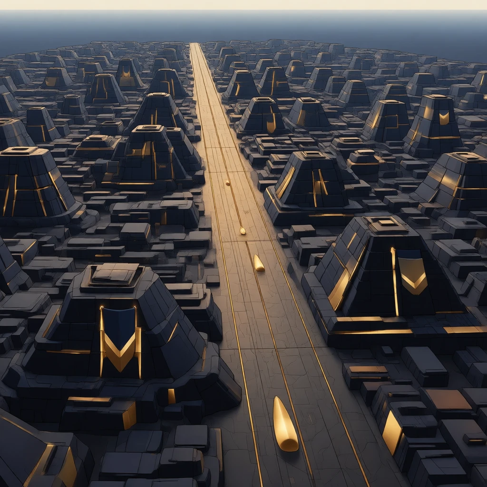
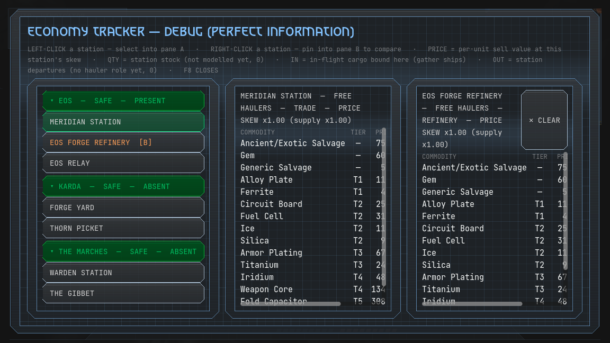
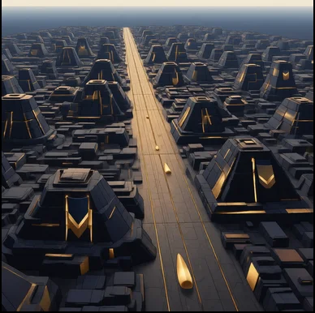
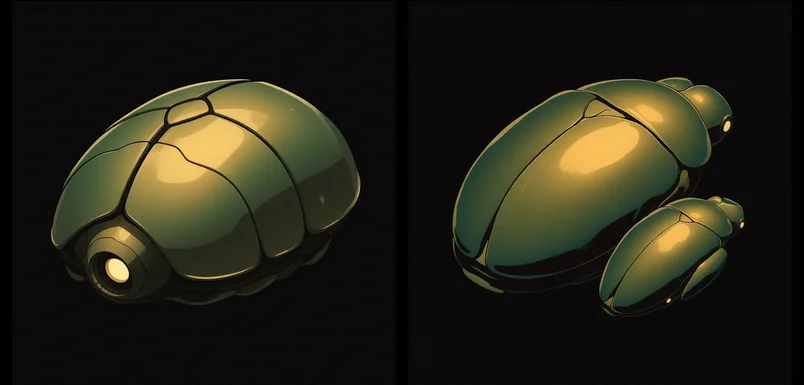
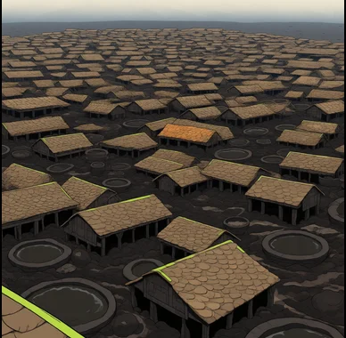
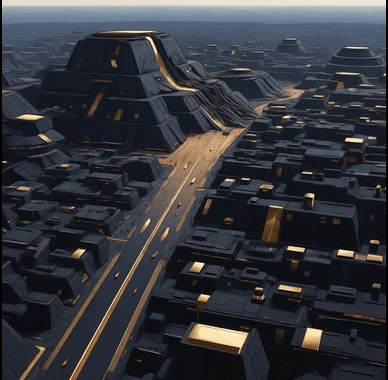
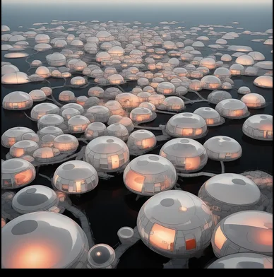
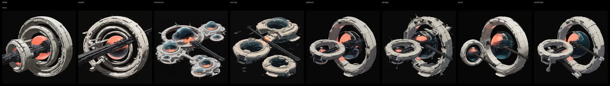
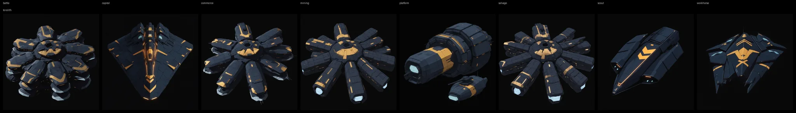
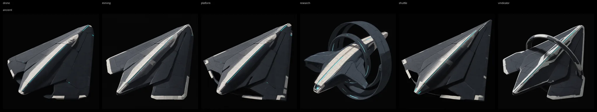

Explore / Fold
Jump gate to gate through a system that's collapsing behind you.

SYS // VINDICATORWake up. The gates are dark. Fold anyway.
Jump gate to gate through a system that's collapsing behind you.

Build your ship module by module — every weapon has its own signature.

Every fold has a price — track the cost live.
The player-facing in-game manual — what the systems are, written for the pilot in the seat. Articles unlock through discovery; the site mirror is always fully open.
Curated systems design docs — the WHY behind economy, fleet, combat, and production art language. Story spoilers stay offline.
Living sources — the codex ships in the game PCK; design notes are curated from the repo. Site pages regenerate when those files move.
What landed → , by area.







